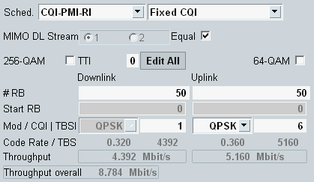
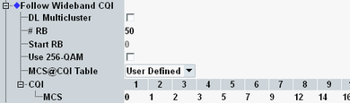

CQI Channel Configuration
Most parameters for the CQI scheduling types can only be configured from the main view, not from the configuration tree.

CQI scheduling settings in the main view
In the main view, you can configure the settings of a selected subframe (TTI) directly. Alternatively, press the button "Edit All" to open a dialog box where you can edit the settings of all subframes.
For the "Follow..." CQI scheduling types, the downlink settings are identical for all subframes.
For some CQI scheduling types, the downlink settings are also contained in the configuration tree.

CQI scheduling settings in the configuration tree
For a description of the CQI settings, see "TTI-Based Channel Configuration".